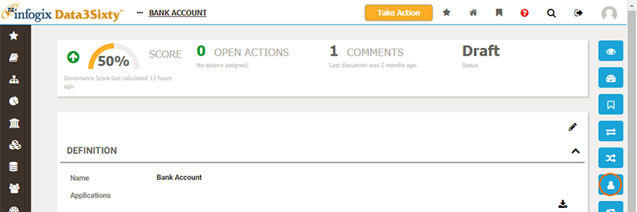
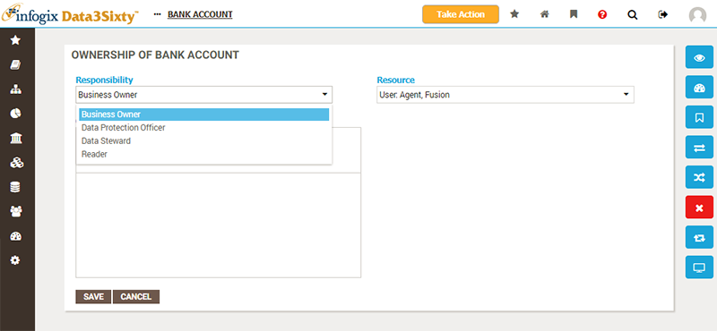

|
|
Assigning ownership of assets
An important aspect of good governance is to establish ownership of assets, with owners taking responsibility for the accuracy and quality of the assets that they own.
Default ownership rules are established by the administrators of the system, with certain types of asset being assigned to particular users and groups upon creation. If you are responsible for configuring the system, or wish to learn more about how this is achieved, please refer to the topic Establishing responsibilities.
To review the ownership of your newly created asset, browse or search to navigate to the asset page and choose the Ownership view from the right of the screen:

A table will be displayed, listing Responsibilities against users/groups (called Resources) for this asset:

Responsibilities determine which actions you can take upon assets. By default, with no responsibilities assigned, a user can only view an asset. Responsibilities then grant you rights to perform actions such as editing assets or assigning ownership.
Responsibilities also determine the role of users in workflows, identifying who is able to approve or reject the actions of others.
Typical responsibilities are:
- Business Owner
- Data Steward
- Data Protection Officer
However, this can be customized for your own installation, and you may wish to seek further information from your system administrators.
Modifying ownership of an asset
If you have the permissions to do so, you can add new responsibilities to users or groups for an asset, by clicking the Add icon above the list. The Ownership panel will appear, prompting you to choose a Responsibility and a Resource (user or group) to assign permissions to the asset:

If you wish to understand exactly which entitlements a Responsibility confers on a user or group, and you have administrator rights, you can check out the Administration > Security > Responsibilities page.
See the help topic Establishing responsibilities for more details.